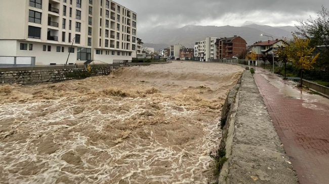

Ngritët shkalla e gatishmërisë në Rrafshin e Dukagjinit pas reshjeve të shiut
Pas reshjeve atmosferike që kanë filluar të martën në mbrëmje, në rajonin e Rrafshit të Dukagjinit,
Kompania Rajonale e Ujësjellësit “Hidrodrini” ka ngritur shkallën e gatishmërisë dhe mobilitetit në zonën e saj të mbulueshmërisë.
Në një komunikatë të kësaj kompanie, thuhet se kryeshefi ekzekutiv i “Hidrodrinit” Agron Tigani në kontakt
dhe koordinim me menaxherët e Njësive Operative, Pejë, Istog, Klinë, Deçan dhe Junik,
ka nxjerrë vendim për ngritjen e shkallës së gatishmërisë së ekipeve preventuese dhe të kontrollit në terren,
duke ofruar mbështetjen e plotë në rast të paraqitjes së nevojës edhe nga rajoni.
Sipas njoftimit, aktualisht në asnjë nga komunat që mbulon KRU “Hidrodrini” nuk janë paraqitur e as raportuar probleme në sistemin e ujësjellësit.